Префектура Кагосима · Якусима · отель
samana hotel Yakushima: отель между горой и океаном на юго-востоке Якусимы
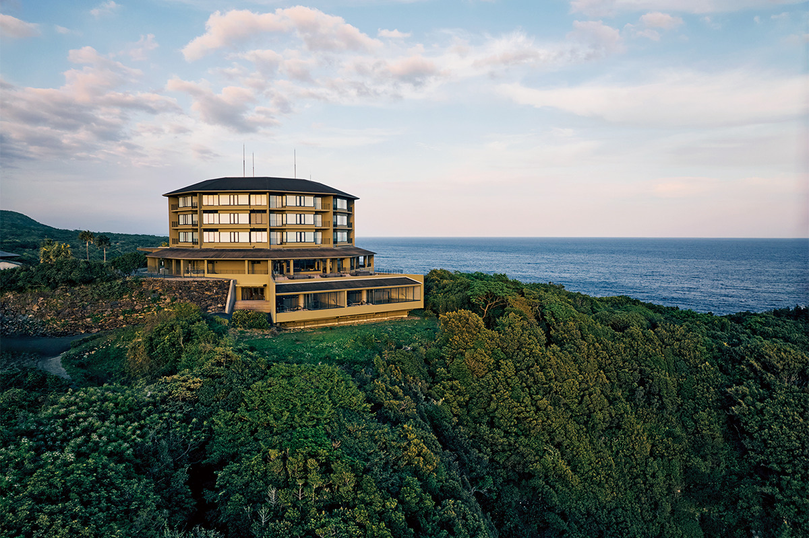
Якусима, остров древних лесов из списка Всемирного природного наследия, лучше всего открывается тем, кто остаётся на нём пожить. Весной 2024 года на юго-востоке острова начал работать samana hotel Yakushima, отель с онсэном, где горы и океан видны из одного места.
Отель
Место между горой и морем
Леса и богатая живая природа Якусимы складывались здесь с древних времён. Отель samana hotel Yakushima открылся весной 2024 года на месте прежнего «Хотэру Якусима», который обновили и переименовали. Он стоит на юго-восточном берегу, у деревни Оноаида: за спиной поднимается гора Моттёму, впереди до горизонта тянется океан. Отсюда остров одновременно показывает и горы, и море.
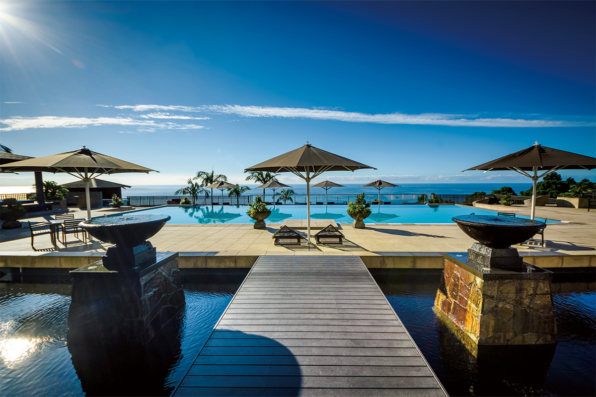
Слово «samana» на санскрите значит «гармония». Отель относится к той же семье, что и sankara hotel&spa Yakushima, один из самых известных курортов острова, но устроен проще и свободнее: в нём можно остановиться всей семьёй или большой компанией.
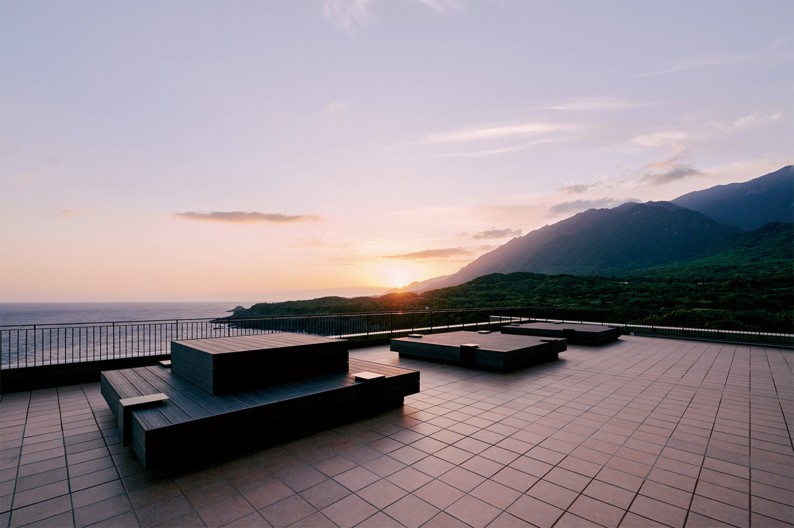
Главное место отеля называется «The 360° Terrace». С неё видно сразу и океан, и гору Моттёму, а на большой скамье легко потерять счёт времени.
В высоком холле с открытым вторым светом звучит музыка, собранная из звуков самого острова: их записывали в разных уголках Якусимы. Мелодия незаметно меняется в зависимости от места и времени суток.
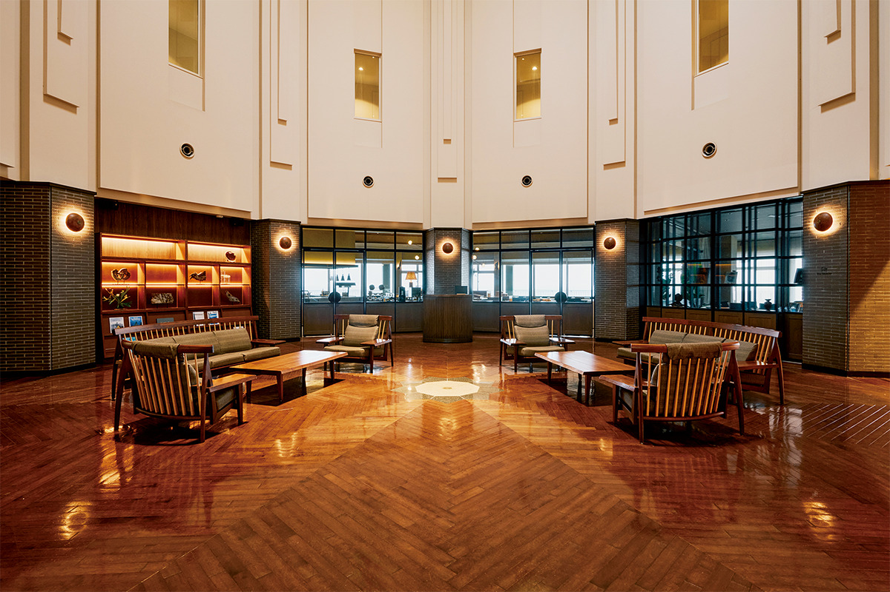
Онсэн
Купальни с видом на океан
После дороги стоит дойти до общего онсэна. Вода поступает из источника примерно в 200 метрах от отеля, она мягкая и чуть тягучая, и онсэн Якусимы славится как полезный для кожи. Есть открытая купальня и крытая, обе смотрят на океан, так что купаться приходится под шум волн и морской ветер. Купальни открыты и для тех, кто не живёт в отеле.
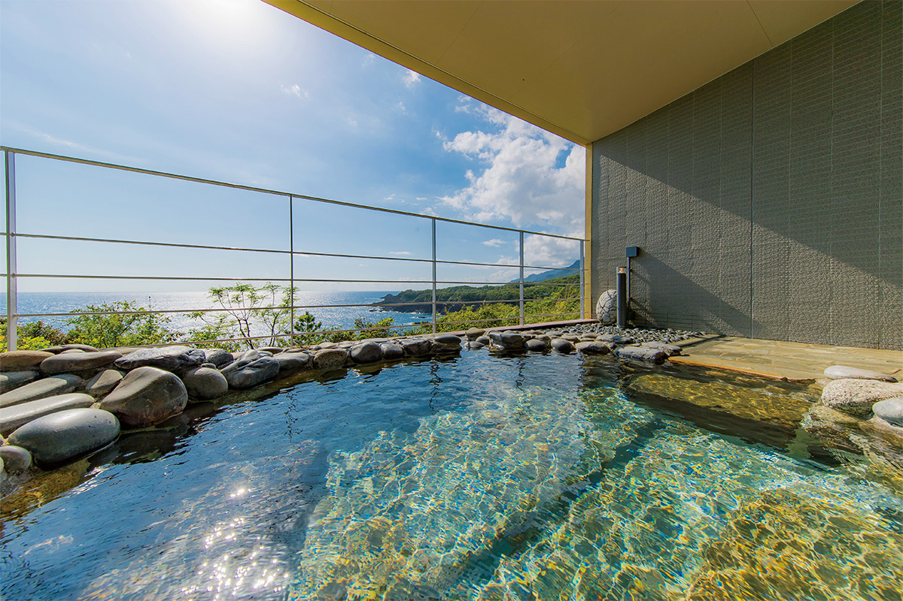
Номера
Океан за окном
Из каждого номера видно либо море, либо горы. Все номера категории «Онсэн-сюит» смотрят на океан, и в них есть собственная ванна с видом. Войдя в номер, первым делом видишь воду и линию горизонта, которая меняет цвет с утра до вечера.
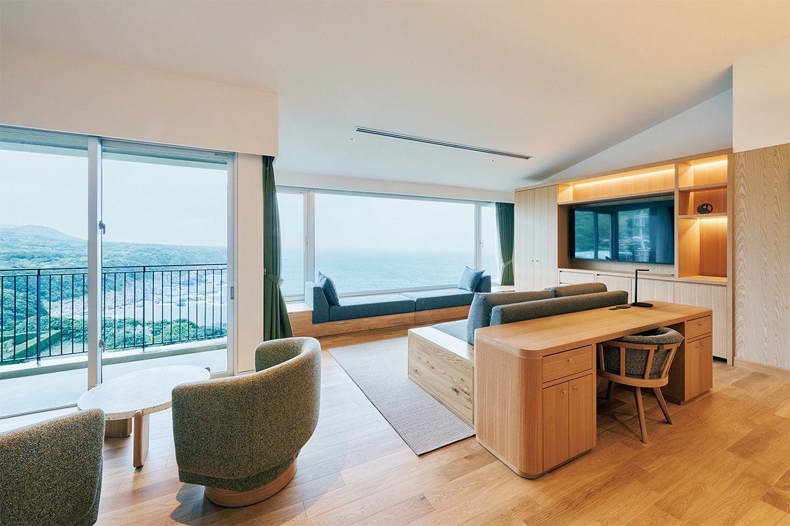
Еда
Буфет из местных продуктов
Ужинают здесь на закате. Ресторан работает как буфет из сезонных продуктов острова и префектуры, а меню составлено под руководством шеф-повара курорта sankara. Среди блюд есть ростбиф из говядины кирисима-вагю на кости. Самое интересное происходит у открытой кухни: повар доводит блюда до готовности прямо при гостях, и их едят горячими.
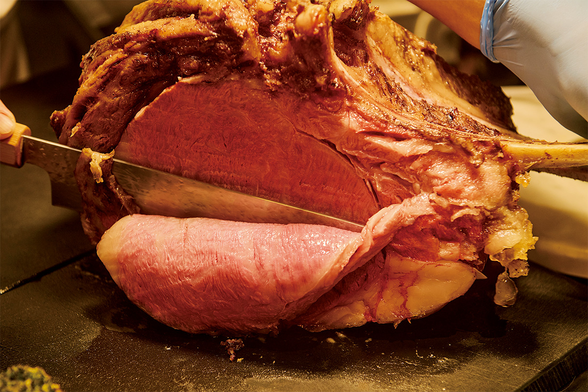
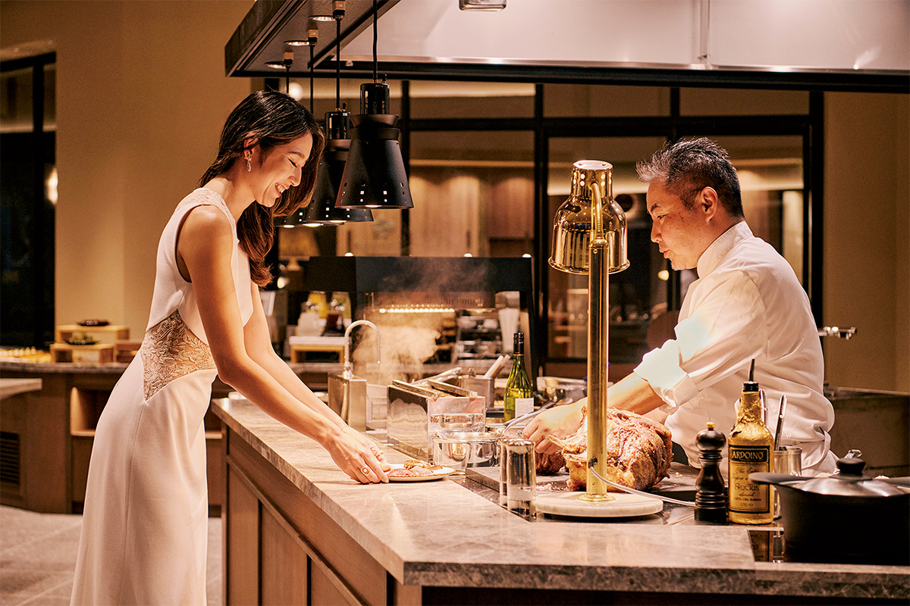
Завтрак тоже буфетом, из продуктов, которые повара выбрали по всему Кюсю, а за окном утреннее солнце блестит на воде.
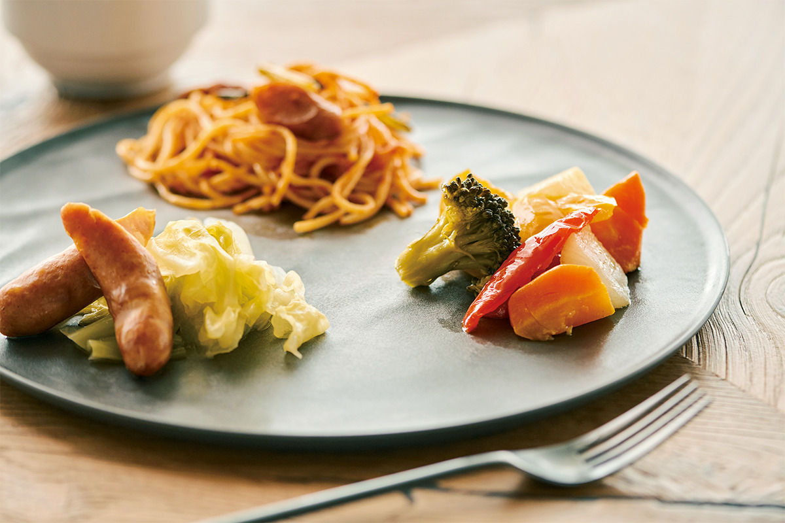
Остров
Лес, река и якусуги
Отель помогает выбраться к природе острова. Самые популярные походы ведут к древнему кедру «Дзёмон-суги» и в ущелье Сиратани-Унсуйкё. В парке «Якусуги-лэнд» пять маршрутов, от простых до сложных. На каяке можно пройти по ущелью у устья реки Анбо и увидеть, как много на острове воды. Есть и велосипедные прогулки по лесу.
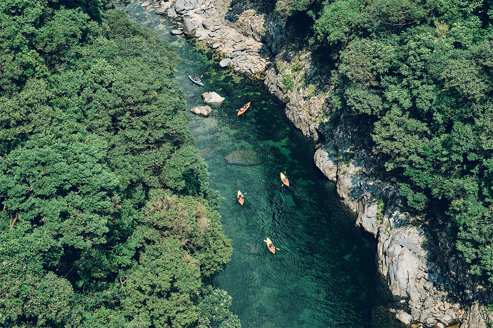
В мастерской «YAKUSHIMA BLESS», примерно в 20 минутах на машине от отеля, можно отполировать кусочек якусуги, местного кедра, и забрать изделие с собой. Это хороший план на дождливый день. Записаться на все занятия можно у стойки регистрации.
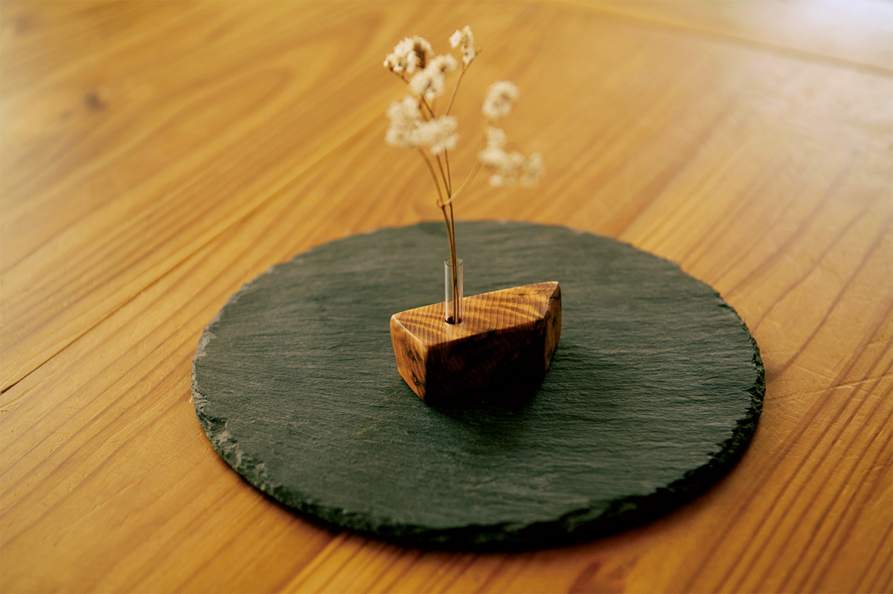
Номер «Онсэн-сюит» с завтраком и ужином стоил в 2024 году от 117 000 иен за номер, стандартный двухместный от 51 000 иен, с налогом и сервисным сбором.
samana hotel Yakushima
- Адрес
- префектура Кагосима, уезд Кумагэ, город Якусима, Оноаида, 136-2
- Телефон
- +81 997-47-2011
- Номера
- 43
- Цены / Вход
- номер на двоих с завтраком и ужином: «Онсэн-сюит» от 117 000 иен, стандартный двухместный от 51 000 иен (с налогом и сервисным сбором)
- Заезд / выезд
- 15:00 / 11:00
- Как добраться
- от аэропорта Якусимы около 30 минут на машине или около 40 минут на автобусе до остановки «Самана хотэру Якусима» (№ 97), от неё пешком рядом